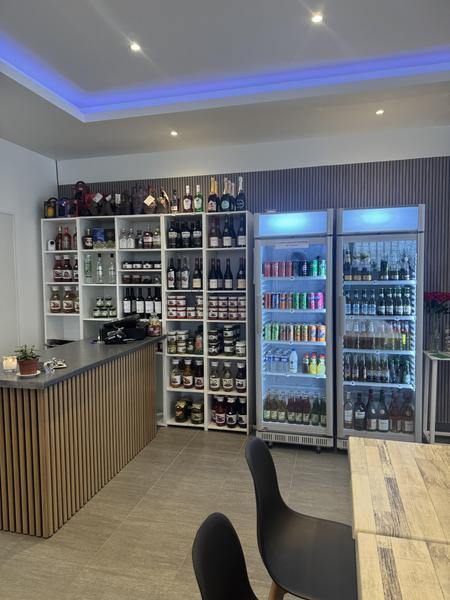

Accueil / Infos
Venir
à Veynes.
Route de Gap, parking sur place et téléphone direct pour confirmer les horaires avant le déplacement.

PRATIQUEUne halte
Une halte
facile.
Le restaurant est situé sur la route de Gap, à Veynes. La fiche publique indique une grande salle climatisée, une terrasse et un parking gratuit.
Ouvrir Google Maps ↗| Adresse | 1213 route de Gap 05400 Veynes |
|---|---|
| Téléphone | 07 58 84 14 30 |
| Ouverture annoncée | Du mercredi au dimanche · 10 h–15 h / 18 h–22 h, à confirmer |
| Services | Sur place, à emporter, restaurant, snack, salon de thé et épicerie fine |
| Accès | Parking gratuit et accès fauteuil roulant annoncés |
BON À SAVOIR
Les horaires sont-ils garantis ?
Non. Les horaires publics restent à confirmer auprès du restaurant, notamment les jours fériés et les changements de saison.
Peut-on réserver ?
Oui, le téléphone public est le moyen de contact recommandé pour une table ou une commande.